Xenium Human Breast Cancer: Biomarker Panel
Source:vignettes/xenium_human_breast_cancer_giottodisk.Rmd
xenium_human_breast_cancer_giottodisk.Rmd1 Overview
This tutorial reads one section of the 10x Xenium v1 Human Breast FFPE with Biomarkers and Housekeeping Genes Custom Panel dataset as a disk-backed GiottoDisk project, builds the expression matrix from its 142.7 million transcripts, and takes it through clustering and cell type annotation. It then groups cells into spatial niches and compares the cell arrangements, or motifs, in the tumor with the rest of the section. For the same platform in memory, see Xenium Human Breast Cancer Pre-Release.
The whole tutorial took about 7.5 minutes with 4 parallel workers on a 64 GB computer, and about 8 minutes in a simulated 16 GB setup (Using less memory); Run time and memory shows the time and memory of each step for both.
2 Install packages
remotes::install_github("giotto-suite/GiottoUtils", ref = "dev")
GiottoUtils::suite_install("GiottoDisk", install_arrow = TRUE) # Giotto 4.3.5 or later
install.packages(c("RcppHNSW", "geometry", "wk", "duckdb", "DBI", "dbplyr"))
BiocManager::install("scran")
# optional: compiled kernels that speed up PCA and spatial statistics
install.packages("GiottoKernels", repos = c("https://giotto-suite.r-universe.dev", "https://cloud.r-project.org"))The Xenium files are zarr archives, decoded with the
blosc package. On Linux, pak::pak("blosc")
also installs the system library it needs.
install.packages("blosc")The motif section uses smotif and its Rust backend smotifrs, both prebuilt on r-universe:
install.packages(c("smotif", "smotifrs"), repos = c("https://drieslab.r-universe.dev", "https://cloud.r-project.org"))3 Dataset explanation
10x Genomics Xenium In Situ on FFPE human breast cancer. The published dataset covers three sections of sample S1; this tutorial uses S1_Bot only, and every figure and count below is that one section. S1_Bot is ductal carcinoma in situ, T1c N0 M0, grade 3, HER2 1+: tumor fills the ducts but an intact myoepithelial layer still bounds them, with stroma and immune infiltrate around both.
The gene panel, number of cells, transcripts and area of section S1_Bot:
| panel: | Xenium Human Breast Cancer HK Gene Panel, 280 targets + 261 controls |
| cells: | 254,480 |
| transcripts: | 142,664,090 decoded, 117,682,273 above the Q20 cutoff |
| area: | 89.0 mm^2 of section S1_Bot, 204 fields of view, 0.2125 um/px |
The export comes from Xenium Onboard Analysis 4.0.1.1. Cells are segmented by the vendor pipeline, and a cell x gene matrix ships with the export; this tutorial rebuilds the matrix from the transcripts instead.
From the command line:
curl -O https://cf.10xgenomics.com/samples/xenium/4.0.0/Human_Breast_Biomarkers_S1_Bot/Human_Breast_Biomarkers_S1_Bot_xe_outs.zip
unzip Human_Breast_Biomarkers_S1_Bot_xe_outs.zip -d Human_Breast_Biomarkers_S1_Bot_xe_outsOr by clicking through: the Xenium v1 Human Breast FFPE with Biomarkers and Housekeeping Genes Custom Panel page > Output and supplemental files > Section 1, bottom > General output files > Xenium Output Bundle (Xenium Explorer subset).
That is 5.9 GB zipped and about the same unpacked, because the files
inside are already compressed. It holds experiment.xenium,
gene_panel.json, morphology_focus/ and four
*.zarr.zip archives. Leave the .zarr.zip
archives zipped: GiottoDisk reads them in place.
| zarr archive | what it holds | size |
|---|---|---|
transcripts.zarr.zip |
142.7 M decoded detections in a 7-level tile grid | 2.72 GB |
cells.zarr.zip |
centroids, areas, and cell + nucleus boundary vertices | 300 MB |
cell_feature_matrix.zarr.zip |
vendor cell x gene matrix | 43 MB |
gene_panel.json carries the panel,
experiment.xenium the micron scaling, and the DAPI channel
of morphology_focus/ is the backdrop for the zoom figures.
Start R in the folder you unpacked into, so the default path below finds
the data, or set XENIUM_DIR to where it is.
4 Packages and setup
library(arrow)
library(Giotto); library(GiottoDisk)
library(data.table)
XENIUM_DIR <- Sys.getenv("XENIUM_DIR", "Human_Breast_Biomarkers_S1_Bot_xe_outs") # the unpacked bundle, read only
VAULT <- Sys.getenv("GIOTTO_VAULT", "vault") # the GiottoDisk store
results_folder <- "results" # Giotto figures, saved as PNGs
# set an appropriate amount of parallel workers for your computer
WORKERS <- 4
# on a 16 GB computer, uncomment these two lines (see Using less memory below)
# WORKERS <- 2
# options(giotto.cores = 4)
future::plan(future::multisession, workers = WORKERS)
instructions <- createGiottoInstructions(save_dir = results_folder,
save_plot = TRUE, show_plot = TRUE,
return_plot = FALSE)
# a managed project directory to hold the object on disk
giotto_source <- sourceCreate(VAULT, type = "gDirSource")
# send expression and spatial writes there instead of a temp folder
setArtifactDumpDir(giotto_source)sourceCreate() makes the vault, a managed project folder
that holds the object on disk. setArtifactDumpDir() sends
every expression and spatial write into it, so saving later has nothing
to gather from temporary folders.
4.1 Using less memory
Each worker is a separate R session holding its own share of the
work, so the worker count above is the setting to lower on a smaller
machine; the tiled steps then run more slowly. Reading the transcripts
also converts them with one process per Giotto core, about 2 GB each
here. On a 16 GB computer, uncomment the two lines under
WORKERS <- 4 above, for 2 workers and 4 cores;
options(giotto.cores = 4) has to come after
library(Giotto), which resets it. The workers keep the
memory they used to read the data until they are restarted, which Aggregating transcripts
into expression does before the next step. Run time and memory shows the 16 GB
setup beside this one. The vault grows to about 6.5 GB, next to the 6 GB
bundle.
5 Read the data
createGiottoXeniumObject() reads the zarr archives in
place, converts each product to parquet once, and caches it in the
vault. Passing the vault as backend makes the object a
disk-backed project. The transcripts are loaded and the vendor’s cell x
gene matrix is not: the expression is built from the transcripts
below.
g_xen <- createGiottoXeniumObject(
xenium_dir = XENIUM_DIR,
backend = giotto_source,
bounds_path = list(cell = "cell"),
qv_threshold = 20, # 10x's recommended Phred cutoff, applied as the grid is read
load_transcripts = TRUE, # all 142.7 M detections, as a disk-backed points store
load_expression = FALSE, # built from the transcripts below instead
load_cellmeta = TRUE,
load_images = "focus",
instructions = instructions)
g_xenAn object of class giotto
>Active spat_unit: cell
>Active feat_type: rna
dimensions : 280, 254480 (features, cells)
[SUBCELLULAR INFO]
polygons : cell
features : rna NegControlProbe UnassignedCodeword NegControlCodeword
[AGGREGATE INFO]
spatial locations ----------------
[cell] raw
attached images ------------------
images : 4 items...
Use objHistory() to see steps and params usedOnly cell boundaries are loaded; the archive also
carries nucleus boundaries, which can be several rings per cell and are
not used here.
5.1 Saving the object
saveGiotto() writes a named snapshot of the object to
the vault. Snapshots are checkpoints:
loadGiotto(VAULT, name = "ingest") reopens this one in
seconds, after running Packages and
setup, so the reading above never has to be repeated.
g_xen <- saveGiotto(g_xen, name = "ingest", overwrite = TRUE, verbose = FALSE)
# uncomment below to reload this snapshot
# g_xen <- loadGiotto(VAULT, name = "ingest", verbose = FALSE)5.2 Aggregating transcripts into expression
The transcripts carry no cell assignment, so
aggregateFeatures() assigns each one to the segmentation
polygon it falls in and counts them into a cell x gene matrix. The 20
negative-control probes are counted the same way, for the quality
control below. Both take under a minute.
This step can be
skipped in favor of the cell x gene matrix that 10x provides,
which counts the same qv >= 20 transcripts: set
load_expression = TRUE in
createGiottoXeniumObject() above and leave out
aggregateFeatures(). Here the expression is built from the
transcripts instead, so that the counts come from the same polygons and
transcripts as the rest of the analysis.
load_transcripts = FALSE would skip the transcripts as
well, but then they cannot be plotted (see Segmentation boundaries
and transcripts) or re-aggregated later.
# restart the workers: they keep the memory they used to read the data, new ones start empty
future::plan(future::sequential); future::plan(future::multisession, workers = WORKERS)
g_xen <- aggregateFeatures(g_xen, spat_info = "cell", feat_info = "rna",
verbose = FALSE)
g_xen <- aggregateFeatures(g_xen, spat_info = "cell", feat_info = "NegControlProbe",
verbose = FALSE)
list_expression(g_xen)spat_unit feat_type name
cell rna raw
cell NegControlProbe raw 6 Quality control and filtering
g_xen <- addStatistics(g_xen, stats = "cell", expression_values = "raw")
# the 20 negative-control probes target nothing, so their counts are this panel's noise floor
g_xen <- addStatistics(g_xen, feat_type = "NegControlProbe",
stats = "cell", expression_values = "raw")
cell_metadata <- pDataDT(g_xen)
neg_metadata <- pDataDT(g_xen, feat_type = "NegControlProbe")
cat(sprintf("mean counts per cell: %.1f over 280 genes, %.3f over 20 control probes | %.1f%% of cells have any control count | signal-to-noise per feature %.0f\n",
mean(cell_metadata$total_expr), mean(neg_metadata$total_expr),
100 * mean(neg_metadata$total_expr > 0),
(mean(cell_metadata$total_expr) / 280) / (mean(neg_metadata$total_expr) / 20)))mean counts per cell: 339.2 over 280 genes, 0.023 over 20 control probes | 2.2% of cells have any control count | signal-to-noise per feature 1054A real gene is detected about a thousand times more often than a control probe, and most cells carry no control count at all, so no background correction is needed.
spatPlot2D(g_xen, cell_color = "nr_feats", color_as_factor = FALSE,
gradient_style = "sequential",
gradient_limits = quantile(cell_metadata$nr_feats, c(0.01, 0.99)),
point_size = 0.25, point_shape = "border", point_border_stroke = 0,
coord_fix_ratio = 1, background_color = "white",
save_param = list(save_name = "section_genes_per_cell"))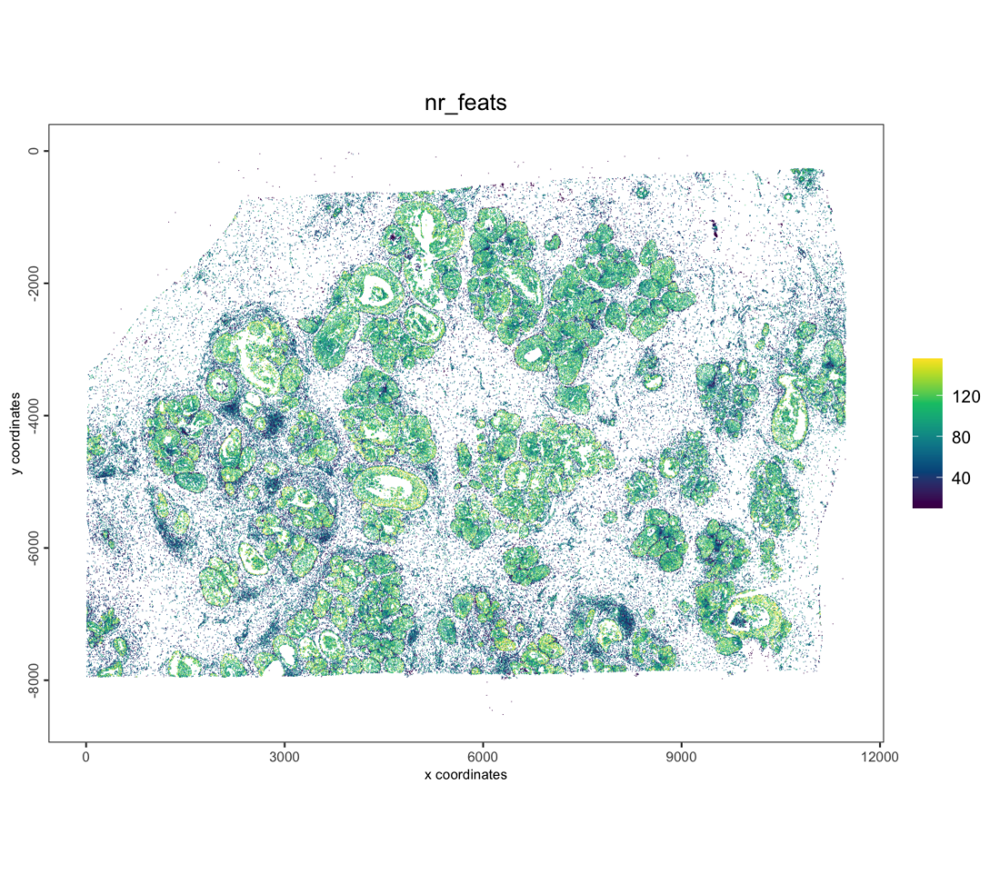
filterDistributions(g_xen, detection = "cells", method = "sum",
nr_bins = 90, scale_axis = "log10",
save_param = list(save_name = "qc_counts"))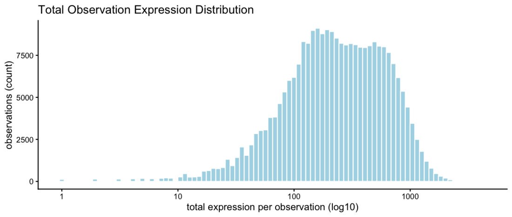
filterDistributions(g_xen, detection = "cells", method = "threshold",
expression_threshold = 1,
nr_bins = max(pDataDT(g_xen)$nr_feats) + 1,
show_plot = FALSE, return_plot = TRUE, save_plot = FALSE) +
ggplot2::geom_vline(xintercept = 10, color = "#C44E52", linetype = "dashed")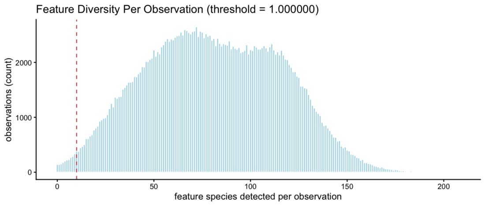
cat(sprintf("%s cells | median %s counts and %s genes per cell | %s cells under 10 genes\n",
format(nrow(cell_metadata), big.mark = ","),
median(cell_metadata$total_expr), median(cell_metadata$nr_feats),
format(sum(cell_metadata$nr_feats < 10), big.mark = ",")))254,480 cells | median 231 counts and 80 genes per cell | 2,165 cells under 10 genesmin_det_feats_per_cell = 10 is low because a cell here
detects only a few tens of the 280 genes.
feat_det_in_min_cells = 100 keeps genes seen in at least
100 cells.
g_xen <- filterGiotto(g_xen,
expression_threshold = 1,
feat_det_in_min_cells = 100,
min_det_feats_per_cell = 10,
verbose = FALSE)
g_xenAn object of class giotto
>Active spat_unit: cell
>Active feat_type: rna
dimensions : 280, 252315 (features, cells)
[SUBCELLULAR INFO]
polygons : cell
features : rna NegControlProbe UnassignedCodeword NegControlCodeword
[AGGREGATE INFO]
expression -----------------------
[cell][rna] raw
[cell][NegControlProbe] raw
spatial locations ----------------
[cell] raw
attached images ------------------
images : 4 items...
Use objHistory() to see steps and params used7 Normalization and feature selection
This is a 280-gene targeted panel, so there is no feature selection: every gene was chosen to be informative, and selecting highly variable genes from it would discard deliberate design rather than noise. The whole panel goes into the dimension reduction.
g_xen <- normalizeGiotto(g_xen, scale_feats = FALSE, scale_cells = FALSE,
scalefactor = 6000)
g_xen <- addStatistics(g_xen, stats = c("cell", "feature"))8 Dimension reduction
SEED <- 1234
g_xen <- runPCA(g_xen, feats_to_use = NULL, scale_unit = TRUE, center = TRUE,
ncp = 50, method = "auto", set_seed = TRUE,
seed_number = SEED, verbose = FALSE)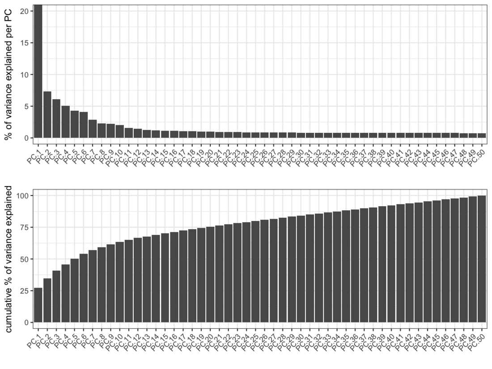
plotDimCovariateCor(g_xen, covariates = "total_expr", dimensions_to_use = 1:30,
threshold = 0.5, # |r| >= 0.5 means depth explains at least a quarter of a PC's variance
save_param = list(save_name = "pc_depth_correlation"))
# drop PC1 only if it is a depth axis
PCS_USE <- 2:30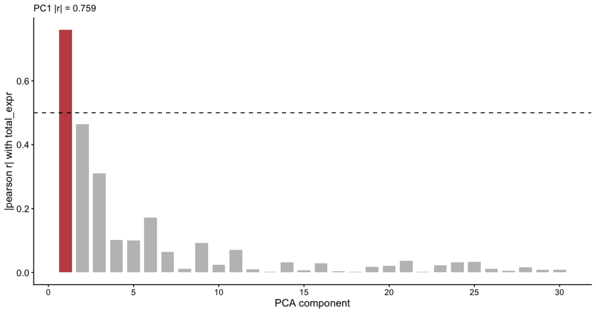
PC1 is the only component above the 0.5 line, so it is treated as a
depth axis and left out: PCS_USE is
2:30.
9 Clustering
The neighbor graph is built once and both steps below read it: UMAP
embeds on the kNN that createNearestNetwork() keeps, and
Leiden partitions the sNN built from it.
g_xen <- createNearestNetwork(g_xen, type = "sNN", k = 30,
dimensions_to_use = PCS_USE,
engine = "hnsw", ef = 400, keep_knn = TRUE,
verbose = FALSE)
g_xen <- runUMAP(g_xen, dimensions_to_use = PCS_USE, n_neighbors = 30,
min_dist = 0.3, spread = 1, n_sgd_threads = 0,
nn_engine = "giotto", set_seed = TRUE, seed_number = SEED,
verbose = FALSE)
g_xen <- doLeidenCluster(g_xen, name = "leiden_clus", resolution = 1,
n_iterations = 20, set_seed = TRUE,
seed_number = SEED)
g_xen <- saveGiotto(g_xen, name = "clustered", overwrite = TRUE, verbose = FALSE)
cell_metadata <- pDataDT(g_xen)
cluster_sizes <- cell_metadata[, .N, by = leiden_clus]
cat(sprintf("%d clusters | %s to %s cells each\n", nrow(cluster_sizes),
format(min(cluster_sizes$N), big.mark = ","),
format(max(cluster_sizes$N), big.mark = ",")))27 clusters | 163 to 28,606 cells each
plotUMAP(g_xen, cell_color = "leiden_clus",
point_size = 0.25, point_alpha = 0.4,
point_shape = "border", point_border_stroke = 0,
legend_symbol_size = 3,
save_param = list(save_name = "umap_clusters"))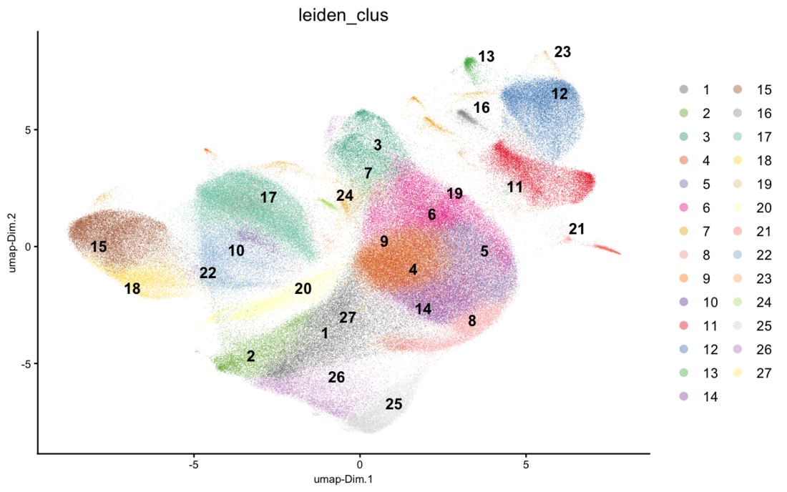
plotUMAP(g_xen, cell_color = "nr_feats", color_as_factor = FALSE,
gradient_style = "sequential",
gradient_limits = quantile(cell_metadata$nr_feats, c(0.01, 0.99)),
point_size = 0.25, point_alpha = 0.4,
point_shape = "border", point_border_stroke = 0,
save_param = list(save_name = "umap_genes"))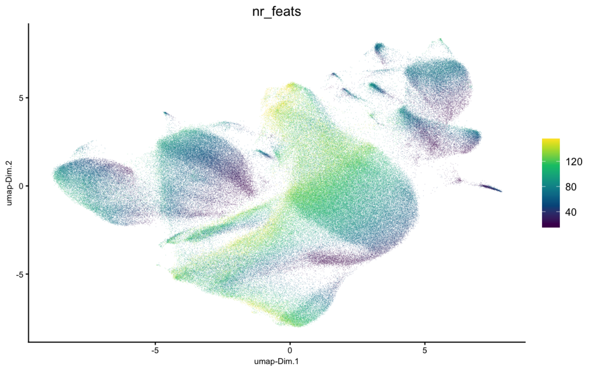
10 Cell type annotation
10.1 Markers
findScranMarkers_one_vs_all() compares each cluster
against the pooled remainder and returns a ranking column,
which orders the genes within each cluster.
scran_markers <- findScranMarkers_one_vs_all(g_xen,
cluster_column = "leiden_clus",
expression_values = "normalized",
verbose = FALSE)
markers_de <- scran_markers[
, .(feats, cluster = as.character(cluster), logFC, p_value = p.value, FDR,
ranking)]
markers_de <- markers_de[logFC >= 0.25 & FDR <= 0.05][order(cluster, ranking)]
cat(sprintf("%s marker genes across %d of %d clusters\n",
format(nrow(markers_de), big.mark = ","),
uniqueN(markers_de$cluster), nrow(cluster_sizes)))1,496 marker genes across 27 of 27 clustersTop 10 markers per cluster
top_markers <- markers_de[order(ranking), .(top = paste(head(feats, 10), collapse = ", ")),
by = "cluster"]
top_markers[order(as.integer(cluster))]cluster top
1 ACTA2, TAGLN, KRT14, MYLK, TFF3, SLC39A6, KRT5, GATA3, CXCL14, MYH11
2 MYLK, KRT5, KRT17, KRT14, COL17A1, TAGLN, LAMC2, ACTA2, TP63, CDH3
3 MKI67, TYMS, HMGB2, RRM2, TOP2A, PRR11, ANLN, MYBL2, CENPF, UBE2C
4 MLPH, SCUBE2, AGR3, SLC39A6, ESR1, FOXA1, GATA3, EPCAM, TPD52, TFF3
5 GATA3, SLC39A6, FOXA1, AGR3, MLPH, CD24, ESR1, SCUBE2, MDM2, EPCAM
6 GATA3, SLC39A6, FOXA1, MLPH, EPCAM, AGR3, CD24, DSP, ESR1, MDM2
7 S100A9, S100A8, LYZ, CD74, CD68, CD163, ARHGDIB, HLA-G, PECAM1, HSPA6
8 SLC39A6, GATA3, FOXA1, MLPH
9 ADIPOQ, ESR1, MLPH, AGR3, SCUBE2, FOXA1, SLC39A6, GATA3, EPCAM, NPY1R
10 SFRP4, FBLN1, C1R, CCDC80, MMP2, LEPR, IGFBP3, IL1R1, IGFBP5, TAGLN
11 CD74, LYZ, CD68, CD163, HSPA6, ARHGDIB, ITGAX, PECAM1, LYVE1, CXCR4
12 TRAC, IL7R, ARHGDIB, CXCR4, CD3E, IL2RG, CD74, CCL5, CYTIP, HLA-G
13 MS4A1, CD74, BANK1, TNFRSF13C, CXCR4, ARHGDIB, IL2RG, BIRC3, CYTIP, HLA-G
14 TFF3, SLC39A6, MLPH, FOXA1, GATA3, SCUBE2, AGR3, TPD52, TFPI2, NPY1R
15 AQP1, PECAM1, VWF, FLT1, PLVAP, HSPG2, RGS5, CLEC14A, COL4A1, CD74
16 TENT5C, IL2RG, PECAM1, CD27, SDC1, CD74, BIRC3, CYTIP, HLA-G, DNAJC3
17 CXCL12, C1R, MMP2, LAMB1, FBLN1, LAMA2, CCDC80, PDGFRB, COLEC12, ADH1B
18 RGS5, ACTA2, PDGFRB, TAGLN, COL4A1, NDUFA4L2, IGFBP5, HEYL, MYLK, ARHGDIB
19 MMP9, MMP12, CD68, APOC1, LYZ, CHIT1, CD74, ITGAX, LPL, CD83
20 PTN, CD24, KRT23, KIT, VTCN1, SFRP1, KRT15, KRT6B, SERPINA3, ANPEP
21 CPA3, KIT, CXCL12, MMP2, C1R, CCDC80, LAMB1, FBLN1, LAMA2, ADH1B
22 PDGFRB, LAMB1, CXCL14, TIMP1, LAMA2, IGFBP5, LOXL1, MMP2, MMP11, CCDC80
23 MKI67, ARHGDIB, TRAC, CD8A, CD3E, CD74, HMGB2, IL2RG, TYMS, CCL5
24 LYVE1, PECAM1, COLEC12, LAMA4, VWF, HSPG2, COL4A1, HLA-G, NDRG1, IL1R1
25 ANKRD30A, S100A14, CD24, VTCN1, SERPINA3, KRT19, MLPH, LYPD3, PIP, MDM2
26 S100A14, CD24, TAGLN, SEMA3C, ACTA2, KRT14, COL17A1, OXTR, VTCN1, SFRP1
27 PIP, ANKRD30A, TFPI2, FASN, LDHB, PGR, LTF, MLPH, SCUBE2, IL1R1 Each cluster is annotated from these markers, from its QC profile, and from the dot plot below, which shows up to three curated marker genes per cell type. The table shows the five clusters with the fewest counts per cell.
cluster_qc <- cell_metadata[
, .(cells = .N,
median_counts = as.numeric(median(total_expr)),
median_genes = as.numeric(median(nr_feats))),
by = .(cluster = leiden_clus)]
head(cluster_qc[order(median_counts)], 5)cluster cells median_counts median_genes
8 8561 266.8017 38
21 2385 290.9558 44
11 12743 312.9462 48
22 10939 353.7626 55
24 829 353.8207 55 10.2 Curated marker panels
Up to five curated marker genes per broad cell type, all on this 280-gene panel.
breast_markers_l1 <- list(
epithelial_luminal = c("EPCAM", "FOXA1", "GATA3", "KRT19", "ESR1"),
epithelial_basal = c("KRT5", "KRT14", "KRT17", "KRT6B", "LAMC2"),
myoepithelial = c("ACTA2", "ACTG2", "MYH11", "OXTR", "COL17A1"),
proliferating = c("MKI67", "TOP2A", "CCNE1", "ANLN", "RRM2"),
fibroblast_CAF = c("MMP2", "FBLN1", "CXCL12", "CCDC80", "C1R"),
pericyte_SMC = c("RGS5", "NDUFA4L2", "HEYL"),
endothelial = c("PECAM1", "VWF", "FLT1", "PLVAP", "CLEC14A"),
lymphatic = c("LYVE1"),
immune_myeloid = c("CD68", "ITGAX", "LYZ", "CD163", "S100A8"),
immune_t_nk = c("CD3E", "TRAC", "CD8A", "IL7R", "CCL5"),
immune_b = c("MS4A1", "BANK1", "TNFRSF13C"),
immune_plasma = c("TENT5C", "SDC1", "CD27"),
mast = c("CPA3", "KIT"),
adipocyte = c("ADIPOQ", "LPL", "LEPR")
)10.3 Naming the clusters
This tissue section is ductal carcinoma in situ (DCIS), so malignant
cells sit inside ducts that still carry a myoepithelial layer, alongside
normal luminal epithelium. Telling the two luminal populations apart
needs copy number or a matched normal, and a 280-gene panel gives
neither. Clusters are therefore named by cell type, not by malignancy,
and proliferating marks a cycling signature that appears in
both.
Manually assign cell-type annotations per Leiden cluster. Leiden cluster numbers can change between package versions or numbers of workers, so check the markers before reusing this mapping on your own run.
broad_palette <- c(
epithelial_luminal = "#238B45", epithelial_basal = "#74C476",
proliferating = "#B2182B", fibroblast_CAF = "#8C510A",
myoepithelial = "#BCBD22", pericyte_SMC = "#7B3294",
endothelial = "#00BFC4", lymphatic = "#3690C0",
immune_myeloid = "#E08214", immune_t_nk = "#2166AC",
immune_b = "#8073AC", immune_plasma = "#67A9CF",
mast = "#FDB863", adipocyte = "#C51B7D",
unassigned = "gray85")
BROAD <- c(
"1" = "myoepithelial", "2" = "epithelial_basal",
"3" = "proliferating", "4" = "epithelial_luminal",
"5" = "epithelial_luminal", "6" = "epithelial_luminal",
"7" = "immune_myeloid", "8" = "unassigned",
"9" = "adipocyte", "10" = "fibroblast_CAF",
"11" = "immune_myeloid", "12" = "immune_t_nk",
"13" = "immune_b", "14" = "epithelial_luminal",
"15" = "endothelial", "16" = "immune_plasma",
"17" = "fibroblast_CAF", "18" = "pericyte_SMC",
"19" = "immune_myeloid", "20" = "epithelial_basal",
"21" = "mast", "22" = "fibroblast_CAF",
"23" = "immune_t_nk", "24" = "lymphatic",
"25" = "epithelial_luminal", "26" = "myoepithelial",
"27" = "epithelial_luminal")
g_xen <- annotateGiotto(g_xen, annotation_vector = BROAD,
cluster_column = "leiden_clus",
name = "cell_type_broad")
cell_metadata <- pDataDT(g_xen)
CELL_TYPES <- intersect(names(broad_palette), cell_metadata$cell_type_broad)
CELL_TYPE_COLORS <- broad_palette[CELL_TYPES]
g_xen <- saveGiotto(g_xen, name = "annotated", overwrite = TRUE, verbose = FALSE)
panel_feats <- featIDs(g_xen)
dot_genes <- unique(unlist(lapply(
breast_markers_l1[intersect(CELL_TYPES, names(breast_markers_l1))],
function(genes) head(genes[genes %in% panel_feats], 3)),
use.names = FALSE))
dotPlot(g_xen, feats = dot_genes,
cluster_column = "cell_type_broad",
cluster_custom_order = CELL_TYPES,
expression_values = "normalized",
gradient_style = "sequential",
dot_scale = 7,
axis_text = 6,
theme_param = list(axis.text.x = ggplot2::element_text(angle = 45, hjust = 1)),
save_param = list(save_name = "celltype_dotplot"))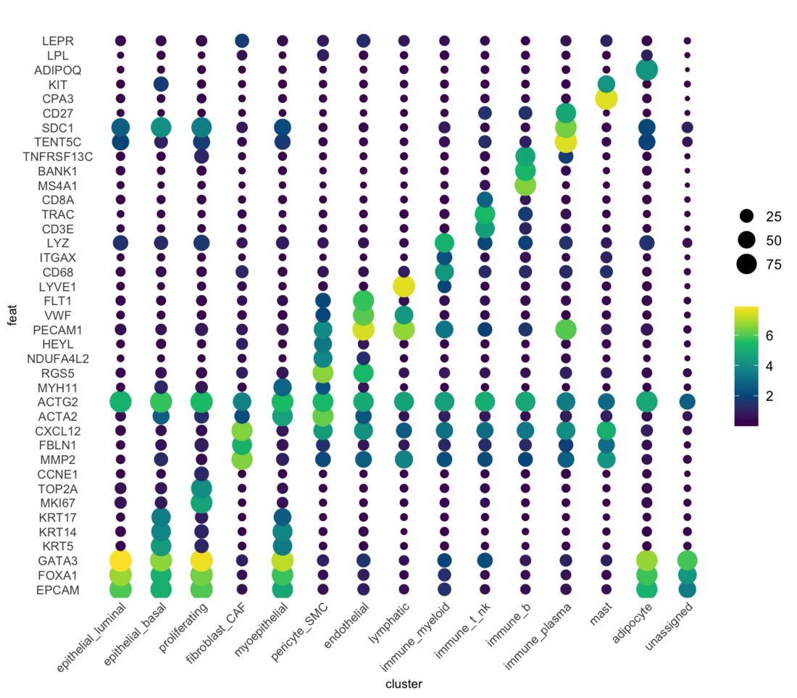
heat_genes <- unique(markers_de[order(cluster, ranking)][
, head(.SD, 2), by = cluster]$feats)
plotMetaDataHeatmap(g_xen, metadata_cols = "cell_type_broad",
selected_feats = heat_genes,
expression_values = "normalized",
show_values = "zscores_rescaled",
custom_cluster_order = CELL_TYPES,
x_text_angle = 45, x_text_size = 8,
y_text_size = 8,
save_param = list(save_name = "marker_heatmap"))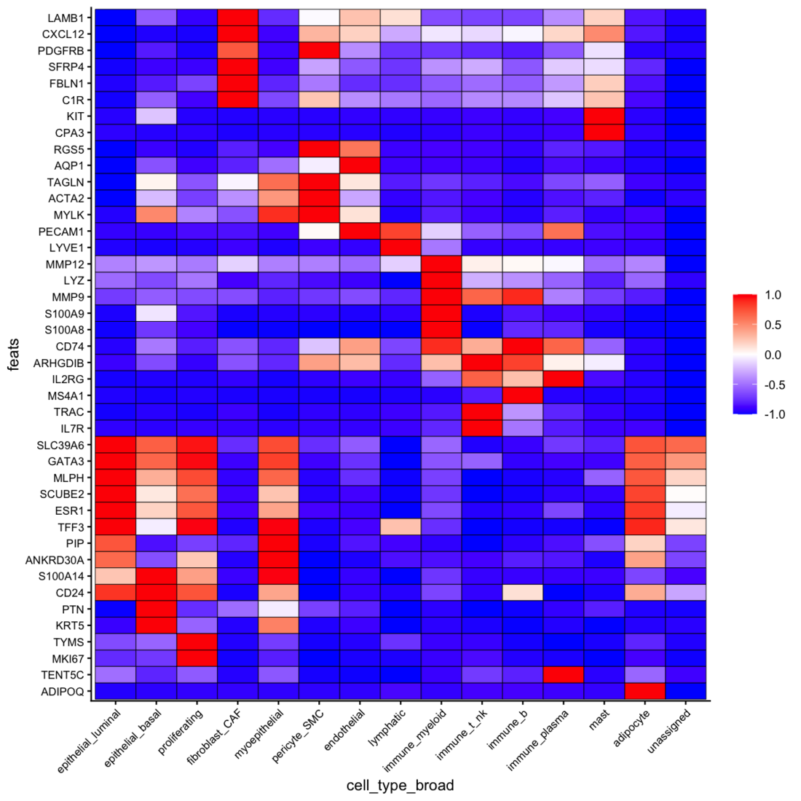
cell_type_props <- calculateLabelProportions(g_xen, labels = "cell_type_broad",
groups = data.frame(group = "all", cell_ID = spatIDs(g_xen)),
column_group_id = "group", output = "data.table")
cell_type_props <- melt(cell_type_props, id.vars = "group",
variable.name = "cell_type", value.name = "proportion")
cell_type_props[order(-proportion),
.(cell_type, cells = round(proportion * length(spatIDs(g_xen))),
percent = round(100 * proportion, 1))]cell_type cells percent
epithelial_luminal 80325 31.8
fibroblast_CAF 41308 16.4
myoepithelial 24250 9.6
epithelial_basal 19194 7.6
immune_myeloid 17742 7.0
immune_t_nk 17454 6.9
endothelial 16835 6.7
proliferating 10137 4.0
unassigned 8561 3.4
pericyte_SMC 7081 2.8
mast 2385 0.9
adipocyte 2325 0.9
immune_b 2039 0.8
immune_plasma 1850 0.7
lymphatic 829 0.3 11 Cell types in the tissue
11.1 Full annotated section
plotUMAP(g_xen, cell_color = "cell_type_broad",
cell_color_code = CELL_TYPE_COLORS,
point_size = 0.25, point_alpha = 0.4,
point_shape = "border", point_border_stroke = 0,
show_center_label = FALSE, legend_symbol_size = 3,
save_param = list(save_name = "umap_celltype"))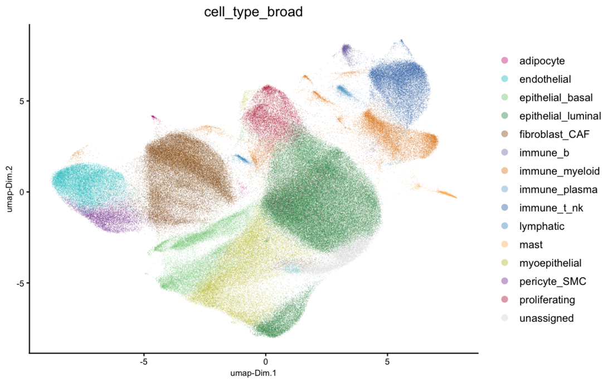
spatPlot2D(
g_xen, cell_color = "cell_type_broad",
cell_color_code = CELL_TYPE_COLORS,
point_size = 0.25, point_shape = "border",
point_border_stroke = 0, coord_fix_ratio = 1,
title = sprintf("%s cells | %d clusters | %d cell types",
format(nrow(cell_metadata), big.mark = ","),
uniqueN(cell_metadata$leiden_clus), length(CELL_TYPES)),
background_color = "white",
save_param = list(save_name = "section_celltype"))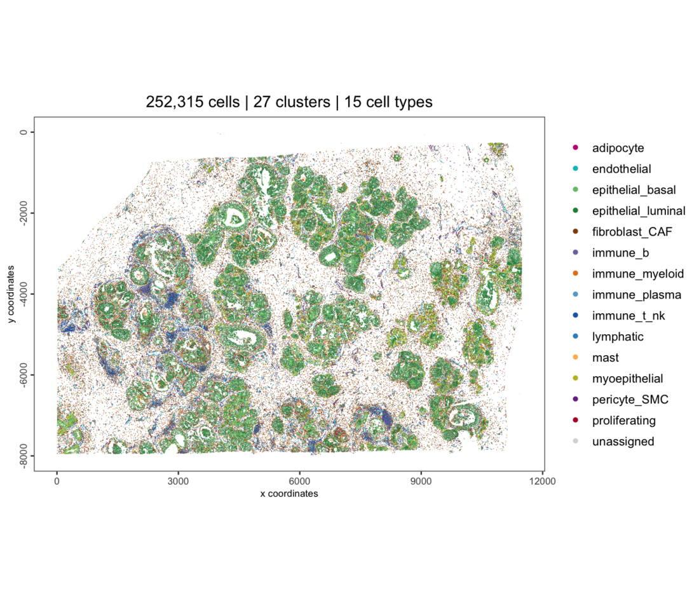
cell_type_plots <- lapply(CELL_TYPES, function(cell_type)
spatPlot2D(g_xen, cell_color = "cell_type_broad",
cell_color_code = CELL_TYPE_COLORS,
select_cell_groups = cell_type, show_other_cells = TRUE,
other_cell_color = "#ECECEC", other_point_size = 0.06,
point_size = 0.18, point_shape = "border",
point_border_stroke = 0, coord_fix_ratio = 1,
show_legend = FALSE, title = cell_type, background_color = "white",
axis_text = 5, axis_title = 6,
theme_param = list(plot.title = ggplot2::element_text(size = 8)),
show_plot = FALSE, return_plot = TRUE, save_plot = FALSE))
cowplot::plot_grid(plotlist = cell_type_plots, ncol = 4)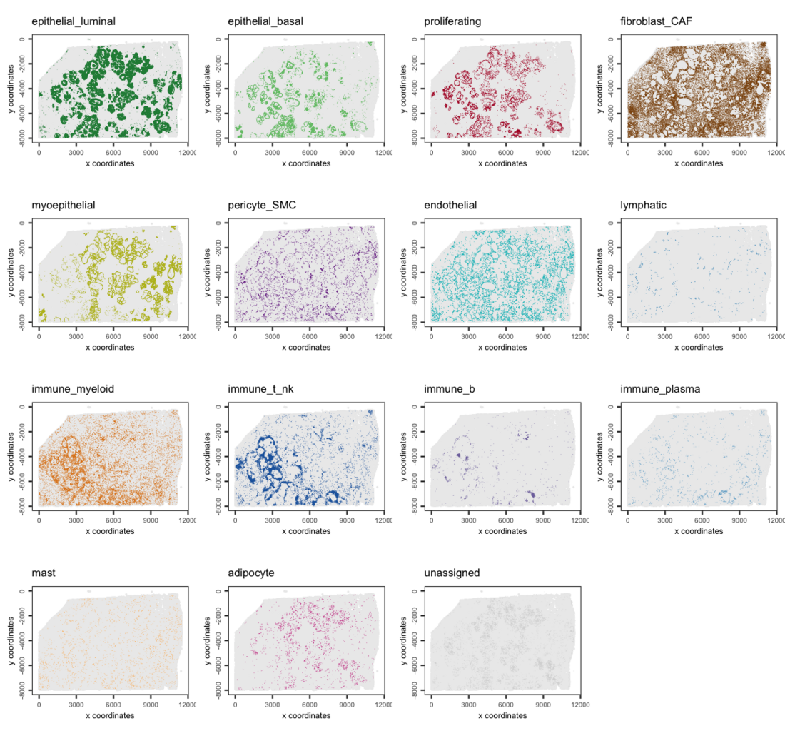
11.2 Segmentation boundaries and transcripts
The window below is the most cell-dense 400 x 400 um square of the
section, given in microns. crop(..., view = "roi") narrows
the object to it, so the zoom plots read only the cells, polygons and
transcripts inside it.
spatInSituPlotPoints(g_zoom,
show_image = TRUE, image_name = "dapi",
polygon_feat_type = "cell", show_polygon = TRUE,
polygon_fill = "cell_type_broad",
polygon_fill_as_factor = TRUE,
polygon_fill_code = CELL_TYPE_COLORS,
polygon_alpha = 0.6,
polygon_color = "gray30", polygon_line_size = 0.06,
legend_text = 9, background_color = "black",
view = "roi",
save_param = list(save_name = "polygons_zoom"))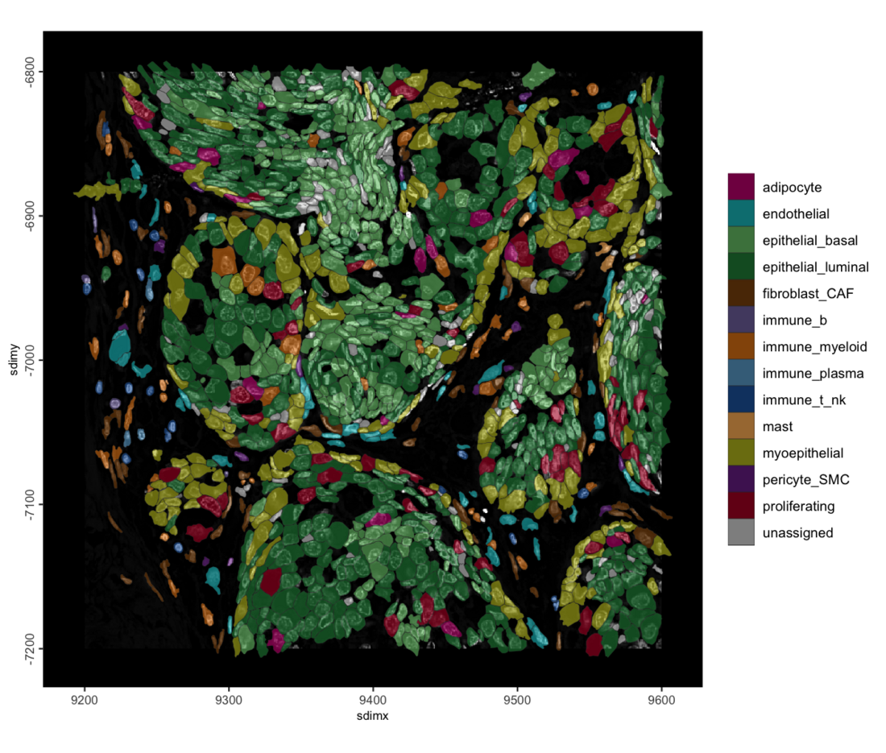
spatInSituPlotPoints(g_zoom,
show_image = TRUE, image_name = "dapi",
feats = list(rna = c("KRT5", "CD24", "MMP11", "LYZ")),
feat_type = "rna",
feats_color_code = c(KRT5 = "#FFFFFF", CD24 = "#00B0FF",
MMP11 = "#FF0000", LYZ = "#A6FF00"),
use_overlap = FALSE, plot_last = "points",
polygon_feat_type = "cell", show_polygon = TRUE,
polygon_fill = "cell_type_broad",
polygon_fill_as_factor = TRUE,
polygon_fill_code = CELL_TYPE_COLORS, polygon_alpha = 0.6,
polygon_color = "gray40", polygon_line_size = 0.04,
point_size = 0.75, legend_text = 9,
background_color = "black", view = "roi",
save_param = list(save_name = "transcripts_zoom"))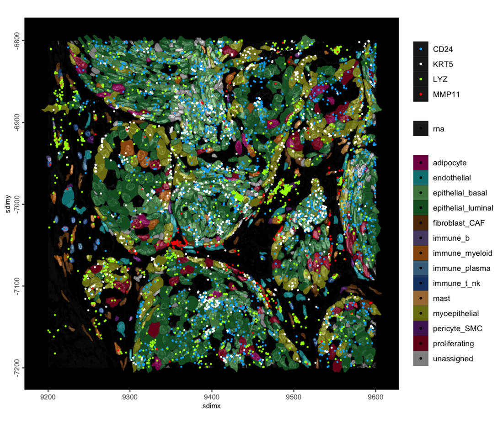
12 Spatial niches
Two cells share a niche when the mix of cell types around them looks the same, however different the two cells are themselves. A niche takes three steps: a spatial network, the cell type composition of each cell’s neighborhood over that network, and a clustering of those compositions.
g_xen <- createSpatialNetwork(g_xen, method = "kNN", k = 30,
name = "niche_knn_30", verbose = FALSE)
g_xen <- calculateLabelProportions(
g_xen, labels = "cell_type_broad", group_method = "spatialnetwork",
spatial_network_name = "niche_knn_30", weights = FALSE,
name = "niche_prop_celltypes", output = "gobject", verbose = FALSE)12.1 Choosing the number of niches
sweepClusterK() runs k-means on the neighborhood
compositions over a range of k and records the total
within-cluster sum of squares, which always falls as k
grows. The chosen k is the elbow: the point furthest from
the line joining the two ends of the curve. A 25,000-cell subsample
resolves the shape of the curve and keeps the sweep short.
k_plot <- sweepClusterK(g_xen, values_to_use = "spatial_enrichment",
spat_enr_name = "niche_prop_celltypes", k_range = 3:16,
score = "wss", subsample = 25000, seed = SEED,
return_plot = TRUE,
save_param = list(save_name = "niche_k"))
NICHE_K <- k_plot$data[selected == TRUE, k]
NICHE_K[1] 7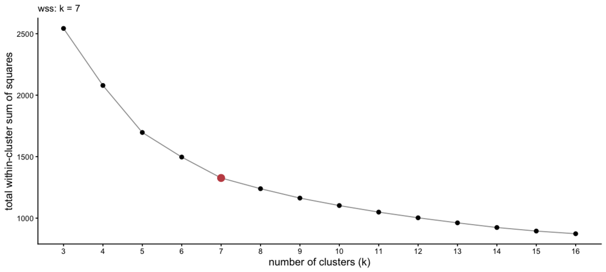
set.seed(SEED)
g_xen <- clusterData(g_xen,
clusterParam("kmeans", centers = NICHE_K,
nstart = 25, iter.max = 100),
what = "spatial_enrichment", spat_enr_name = "niche_prop_celltypes",
name = "niche_k", output = "gobject")12.2 Naming the niches
Each niche is named from the composition of the neighborhoods in it, shown in the bars and table below. k-means numbers its clusters arbitrarily, so as with the cell types, check the composition before reusing these names.
NICHE_NAMES <- c(
"1" = "vascular immune stroma",
"2" = "TLS",
"3" = "tumor core (basal)",
"4" = "tumor core (luminal)",
"5" = "fibroblast-rich stroma",
"6" = "tumor-duct interface",
"7" = "duct basal layer")
g_xen <- annotateGiotto(g_xen, annotation_vector = NICHE_NAMES,
cluster_column = "niche_k", name = "niche")
NICHE_COLORS <- setNames(getDistinctColors(length(NICHE_NAMES)), NICHE_NAMES)
cell_metadata <- pDataDT(g_xen)
GiottoVisuals::plotLabelComposition(g_xen, groups = "niche",
spat_enr_name = "niche_prop_celltypes",
label_color_code = CELL_TYPE_COLORS,
save_param = list(save_name = "niche_composition"))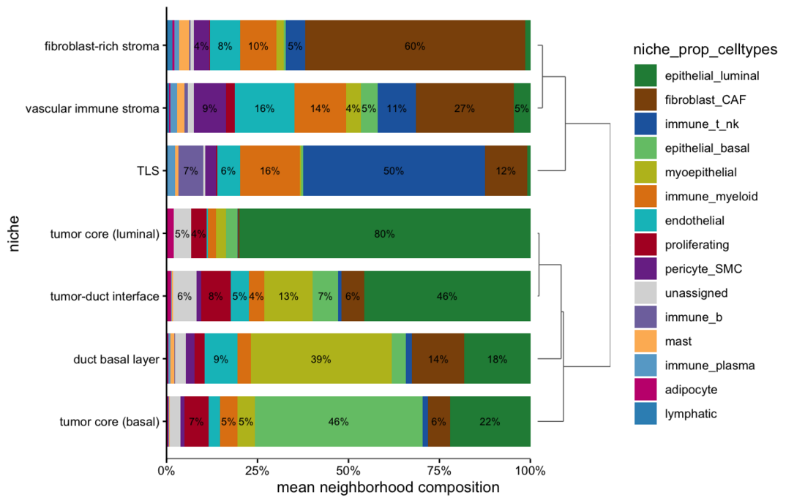
Cells of each type in each niche
table(niche = cell_metadata$niche,
cell_type = factor(cell_metadata$cell_type_broad, levels = CELL_TYPES)) cell_type
niche epithelial_luminal epithelial_basal proliferating
duct basal layer 4044 1330 836
fibroblast-rich stroma 238 66 29
TLS 141 28 46
tumor core (basal) 4361 11941 1507
tumor core (luminal) 45203 1195 1938
tumor-duct interface 25747 3449 5439
vascular immune stroma 591 1185 342
cell_type
niche fibroblast_CAF myoepithelial pericyte_SMC endothelial
duct basal layer 4674 13843 862 3556
fibroblast-rich stroma 19173 128 1120 2222
TLS 2289 13 565 1226
tumor core (basal) 1157 1152 190 617
tumor core (luminal) 30 386 7 41
tumor-duct interface 1844 8180 470 1969
vascular immune stroma 12141 548 3867 7204
cell_type
niche lymphatic immune_myeloid immune_t_nk immune_b
duct basal layer 14 1146 484 67
fibroblast-rich stroma 498 3128 1671 96
TLS 49 3471 10359 1420
tumor core (basal) 0 864 175 11
tumor core (luminal) 0 1118 45 17
tumor-duct interface 7 1792 184 41
vascular immune stroma 261 6223 4536 387
cell_type
niche immune_plasma mast adipocyte unassigned
duct basal layer 149 282 92 955
fibroblast-rich stroma 352 941 208 237
TLS 410 195 21 91
tumor core (basal) 5 22 88 653
tumor core (luminal) 2 5 1170 2494
tumor-duct interface 30 74 604 3504
vascular immune stroma 902 866 142 627
spatPlot2D(g_xen, cell_color = "niche", cell_color_code = NICHE_COLORS,
point_size = 0.25, point_shape = "border", point_border_stroke = 0,
coord_fix_ratio = 1, background_color = "white",
legend_symbol_size = 3,
save_param = list(save_name = "niche_spatial"))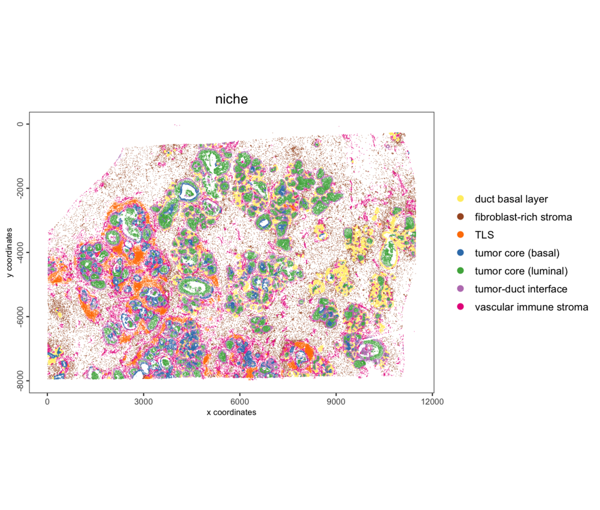
g_xen <- saveGiotto(g_xen, name = "niches", overwrite = TRUE, verbose = FALSE)13 Spatial motifs
A niche describes the mix of cell types around a cell; a
motif describes how they are arranged. A motif is a
small connected group of cells, here three, classed by its cell types
and its shape: an open chain (A-B-C, where the first type listed is the
center linking the other two) or a closed triangle.
cellProximityMotifs() counts each motif class on the
spatial network and compares the count against a null model.
With null = "conditional" the null holds the observed
pairs of neighboring cell types fixed, so a motif that is still enriched
is enriched beyond what its pairs already explain.
Motifs are counted on a Delaunay network, which links each cell to only its touching neighbors, about six, so counting stays fast at this size.
g_xen <- createSpatialNetwork(g_xen, name = "Delaunay_network",
method = "Delaunay",
delaunay_method = "delaunayn_geometry",
verbose = FALSE)13.1 Comparing motifs in tumor versus non-tumor compartments
The niches split the section in two. The tumor / interface
compartment pools the two tumor core niches and the tumor-duct
interface; the non-tumor compartment pools the vascular immune stroma,
the TLS, the fibroblast-rich stroma and the duct basal layer. In DCIS
the tumor stays inside the myoepithelial layer. The duct basal layer
niche is mostly that layer and the stroma next to it, so it is counted
with the non-tumor tissue. Each compartment is cut out with
subsetGiotto() and its motifs counted on its own part of
the network, so a motif is counted only when all three of its cells are
in the compartment.
TUMOR_INTERFACE_NICHES <- c("tumor core (basal)", "tumor core (luminal)",
"tumor-duct interface")
MOTIF_GROUPS <- list(
tumor_interface = cell_metadata[niche %in% TUMOR_INTERFACE_NICHES, cell_ID],
non_tumor = cell_metadata[!niche %in% TUMOR_INTERFACE_NICHES, cell_ID])
cat(sprintf("%s: %s cells\n", names(MOTIF_GROUPS),
format(lengths(MOTIF_GROUPS), big.mark = ",")), sep = "")tumor_interface: 129,728 cells
non_tumor: 122,587 cells
motifs <- lapply(MOTIF_GROUPS, function(cell_ids)
cellProximityMotifs(subsetGiotto(g_xen, cell_ids = cell_ids, verbose = FALSE),
spatial_network_name = "Delaunay_network",
cluster_column = "cell_type_broad",
size = 3L,
null = "conditional",
n_perm = 1000L,
set_seed = TRUE,
seed_number = SEED))
cat(sprintf("%s: %d motif classes, %d enriched and %d depleted at adjusted p <= 0.05\n",
names(motifs), vapply(motifs, nrow, 1L),
vapply(motifs, function(m) sum(m$p_adj <= 0.05 & m$z > 0), 1L),
vapply(motifs, function(m) sum(m$p_adj <= 0.05 & m$z < 0), 1L)), sep = "")tumor_interface: 2297 motif classes, 160 enriched and 171 depleted at adjusted p <= 0.05
non_tumor: 2480 motif classes, 325 enriched and 277 depleted at adjusted p <= 0.05
plotMotifEnrichment(g_xen, motifs$tumor_interface, min_observed = 100, top = 10,
save_param = list(save_name = "motif_enrichment_tumor_interface"))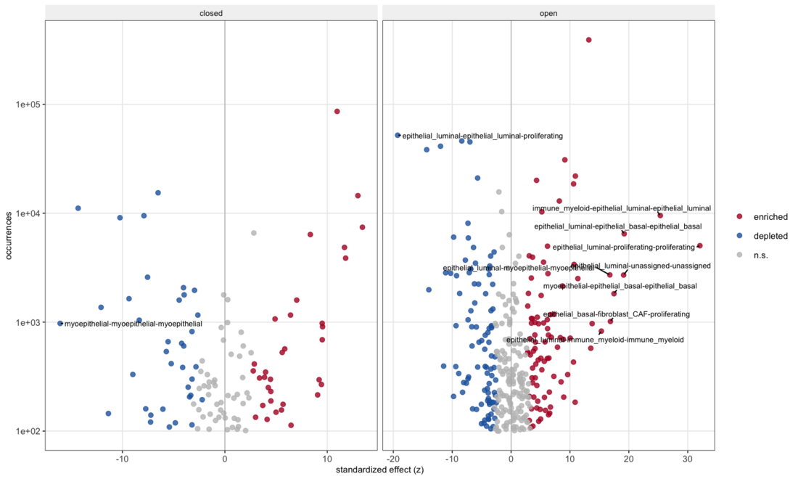
plotMotifGlyphs(g_xen, motifs$tumor_interface, cell_color_code = CELL_TYPE_COLORS,
save_param = list(save_name = "motif_glyphs_tumor_interface"))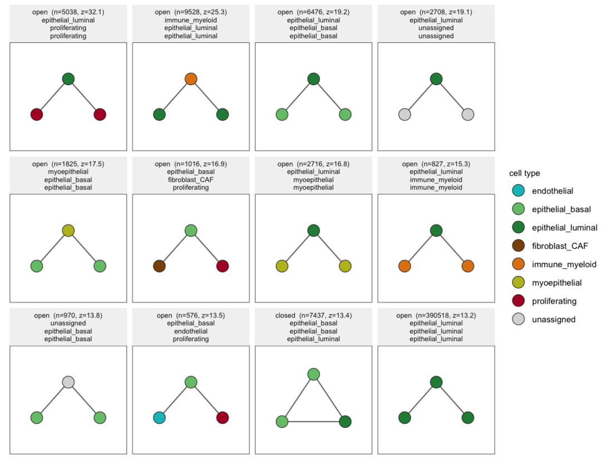
plotMotifGlyphs(g_xen, motifs$non_tumor, cell_color_code = CELL_TYPE_COLORS,
save_param = list(save_name = "motif_glyphs_non_tumor"))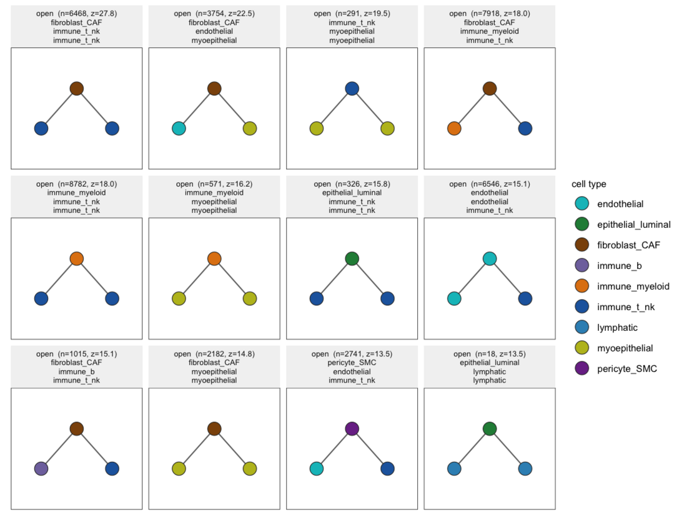
The same motif can be compared between the two compartments by its fold over the null. Only motifs seen at least 100 times in both are compared, so neither fold rests on a handful of instances, and only motifs enriched in the tumor / interface compartment (adjusted p <= 0.05) are kept. They are ranked by that adjusted p-value, then by the ratio of the two folds. The ratio ranks the motifs; it is not a test of the difference between the compartments.
motif_contrast <- merge(
motifs$tumor_interface[, .(motif_id, observed_tumor = observed, fold_tumor = fold,
p_adj_tumor = p_adj)],
motifs$non_tumor[, .(motif_id, observed_non_tumor = observed, fold_non_tumor = fold)],
by = "motif_id")[observed_tumor >= 100 & observed_non_tumor >= 100 &
p_adj_tumor <= 0.05 & fold_tumor > 1]
motif_contrast[, log2_tumor_vs_non_tumor := log2(fold_tumor / fold_non_tumor)]
setorder(motif_contrast, p_adj_tumor, -log2_tumor_vs_non_tumor)
head(motif_contrast[, .(motif_id, p_adj_tumor = signif(p_adj_tumor, 2),
fold_tumor = round(fold_tumor, 2),
fold_non_tumor = round(fold_non_tumor, 2),
log2_tumor_vs_non_tumor = round(log2_tumor_vs_non_tumor, 2))], 10)motif_id p_adj_tumor fold_tumor fold_non_tumor log2_tumor_vs_non_tumor
size3_open_epithelial_luminal-endothelial-myoepithelial 0.016 1.48 0.75 0.98
size3_open_epithelial_basal-endothelial-proliferating 0.016 2.15 1.13 0.93
size3_closed_endothelial-epithelial_luminal-myoepithelial 0.016 1.49 0.84 0.82
size3_open_epithelial_luminal-fibroblast_CAF-proliferating 0.016 1.24 0.70 0.82
size3_closed_epithelial_luminal-fibroblast_CAF-myoepithelial 0.016 1.49 0.86 0.80
size3_open_unassigned-endothelial-myoepithelial 0.016 1.63 0.99 0.72
size3_closed_epithelial_luminal-fibroblast_CAF-fibroblast_CAF 0.016 1.93 1.17 0.72
size3_open_epithelial_basal-myoepithelial-proliferating 0.016 1.19 0.75 0.68
size3_open_epithelial_luminal-myoepithelial-myoepithelial 0.016 1.54 0.97 0.67
size3_open_fibroblast_CAF-epithelial_luminal-pericyte_SMC 0.016 1.87 1.23 0.60
top_tumor_motif <- motif_contrast[1, motif_id]
spatMotifPlot(subsetGiotto(g_xen, cell_ids = MOTIF_GROUPS$tumor_interface, verbose = FALSE),
motif_id = top_tumor_motif,
cluster_column = "cell_type_broad",
spatial_network_name = "Delaunay_network",
save_param = list(save_name = "motif_spatial_tumor_interface"))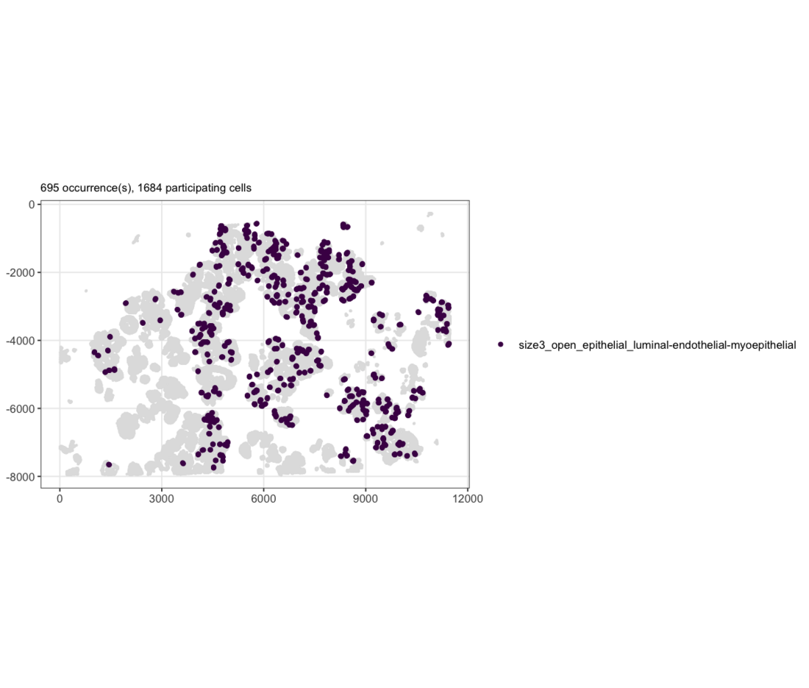
g_xen <- saveGiotto(g_xen, name = "motifs", overwrite = TRUE, verbose = FALSE)
# uncomment below to reload the last snapshot
# g_xen <- loadGiotto(VAULT, name = "motifs", verbose = FALSE)14 Further reading
- Atera Human Breast Cancer: breast cancer on 10x’s Atera platform, with spatial co-expression and motifs on a whole transcriptome panel.
- Xenium Human Breast Cancer Pre-Release: an earlier Xenium breast dataset, read in memory rather than from disk.
15 Run time and memory
This page was built on a computer with 18 cores and 64 GB of memory. The time and peak memory of each section were measured in two setups:
- 4 workers and 10 cores, 64 GB (blue): the tutorial as written, with the workers set in Packages and setup. About 7.5 minutes in total.
- 2 workers and 4 cores, 16 GB (orange): the setup from Using less memory, simulated on the same computer. GiottoDisk was told only the memory a 16 GB laptop has free, and the run would have been stopped past 16 GB. About 8.3 minutes in total.
Reading the data is the only section where the two setups differ: 3.5 minutes and 26 GB with 4 workers, 4.3 minutes and 15 GB with 2 workers and 4 cores. The analysis after it takes about 4 minutes and at most 11 GB in both, with clustering the longest step at about 1.5 minutes. Both runs gave the same clusters, cell types and niches; only the UMAP layout differs. A 16 GB computer usually has about 12 GB free once the system and other programs are running, so expect reading the data to be slower there while the system swaps or compresses memory.
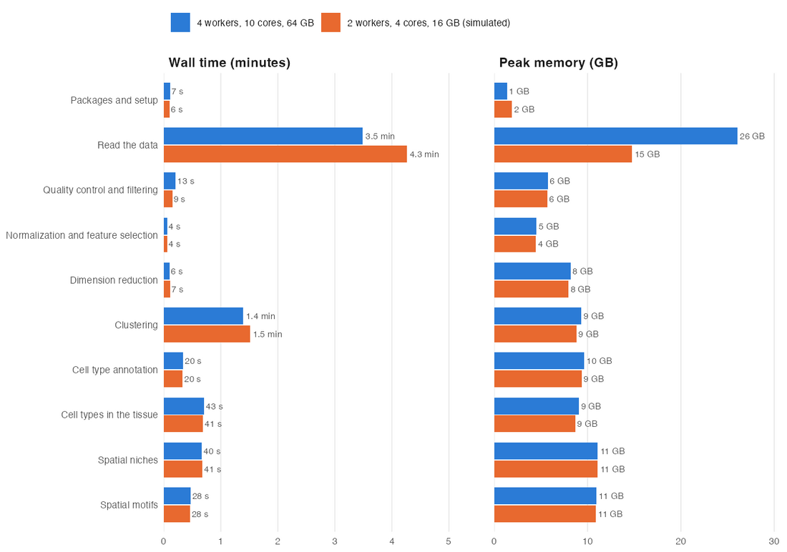
Memory is the physical memory of the R session and its parallel workers together, as a task manager reports it, sampled once a second; each bar is the highest value during that section.
Time and memory per section
| Section | Time, 64 GB | Peak memory, 64 GB | Time, 16 GB | Peak memory, 16 GB |
|---|---|---|---|---|
| Packages and setup | 7 s | 1 GB | 6 s | 2 GB |
| Read the data | 3.5 min | 26 GB | 4.3 min | 15 GB |
| Quality control and filtering | 13 s | 6 GB | 9 s | 6 GB |
| Normalization and feature selection | 4 s | 5 GB | 4 s | 4 GB |
| Dimension reduction | 6 s | 8 GB | 7 s | 8 GB |
| Clustering | 1.4 min | 9 GB | 1.5 min | 9 GB |
| Cell type annotation | 20 s | 10 GB | 20 s | 9 GB |
| Cell types in the tissue | 43 s | 9 GB | 41 s | 9 GB |
| Spatial niches | 40 s | 11 GB | 41 s | 11 GB |
| Spatial motifs | 28 s | 11 GB | 28 s | 11 GB |
| Total | 7.5 min | 26 GB | 8.3 min | 15 GB |
16 Session information
future::plan(future::sequential)
sessionInfo()R version 4.6.1 (2026-06-24)
Platform: aarch64-apple-darwin23
Running under: macOS Golden Gate 27.0.1
Matrix products: default
BLAS: /Library/Frameworks/R.framework/Versions/4.6/Resources/lib/libRblas.0.dylib
LAPACK: /Library/Frameworks/R.framework/Versions/4.6/Resources/lib/libRlapack.dylib; LAPACK version 3.12.1
locale:
[1] C.UTF-8/C.UTF-8/C.UTF-8/C/C.UTF-8/C.UTF-8
time zone: America/New_York
tzcode source: internal
attached base packages:
[1] stats graphics grDevices utils datasets methods base
other attached packages:
[1] data.table_1.18.6.1 GiottoDisk_0.0.0.6 Giotto_4.3.5
[4] GiottoClass_0.7.26 arrow_25.0.1
loaded via a namespace (and not attached):
[1] RColorBrewer_1.1-3 ggdendro_0.2.0
[3] wk_0.9.5 jsonlite_2.0.0
[5] magrittr_2.0.5 farver_2.1.2
[7] rmarkdown_2.32 ragg_1.5.2
[9] vctrs_0.7.3 memoise_2.0.1
[11] GiottoUtils_0.2.9 terra_1.9-50
[13] htmltools_0.5.9 S4Arrays_1.12.1
[15] BiocNeighbors_2.6.0 blosc_0.1.2
[17] SparseArray_1.12.3 sass_0.4.10
[19] parallelly_1.48.0 bslib_0.12.0
[21] htmlwidgets_1.6.4 plotly_4.12.1
[23] cachem_1.1.0 igraph_2.3.4
[25] lifecycle_1.0.5 pkgconfig_2.0.3
[27] rsvd_1.0.6 Matrix_1.7-5
[29] R6_2.6.1 fastmap_1.2.0
[31] magic_1.6-1-1 MatrixGenerics_1.24.0
[33] future_1.80.0 digest_0.6.39
[35] colorspace_2.1-4 S4Vectors_0.50.3
[37] dqrng_0.4.1 irlba_2.4.1
[39] textshaping_1.0.5 GenomicRanges_1.64.0
[41] beachmat_2.28.0 filelock_1.0.3
[43] labeling_0.4.3 progressr_1.1.0
[45] httr_1.4.9 polyclip_1.10-7
[47] abind_1.4-8 compiler_4.6.1
[49] smotif_0.2.0 bit64_4.8.6
[51] withr_3.0.3 smotifrs_0.2.0
[53] S7_0.2.2 backports_1.5.1
[55] BiocParallel_1.46.0 viridis_0.6.5
[57] DBI_1.3.0 ggforce_0.5.0
[59] R.utils_2.13.0 duckdb_1.5.6
[61] MASS_7.3-65 DelayedArray_0.38.2
[63] bluster_1.22.0 gtools_3.9.5
[65] GiottoVisuals_0.2.16 tools_4.6.1
[67] otel_0.2.0 future.apply_1.21.0
[69] R.oo_1.27.1 glue_1.8.1
[71] dbscan_1.2.7 grid_4.6.1
[73] checkmate_2.3.4 cluster_2.1.8.2
[75] generics_0.1.4 gtable_0.3.6
[77] R.methodsS3_1.8.2 tidyr_1.3.2
[79] metapod_1.20.0 BiocSingular_1.28.1
[81] tidygraph_1.3.1 ScaledMatrix_1.20.0
[83] xml2_1.6.0 XVector_0.52.0
[85] BiocGenerics_0.58.1 tilework_1.0.0.9000
[87] ggrepel_0.9.8 pillar_1.11.1
[89] limma_3.68.5 nanoarrow_0.9.0
[91] RcppHNSW_0.7.0 dplyr_1.2.1
[93] tweenr_2.0.3 lattice_0.22-9
[95] bit_4.6.0 tidyselect_1.2.1
[97] locfit_1.5-9.12 SingleCellExperiment_1.34.0
[99] scuttle_1.22.0 knitr_1.52
[101] gridExtra_2.3.1 IRanges_2.46.0
[103] Seqinfo_1.2.0 edgeR_4.10.7
[105] SummarizedExperiment_1.42.0 scattermore_1.2
[107] stats4_4.6.1 xfun_0.62
[109] graphlayouts_1.2.5 Biobase_2.72.0
[111] statmod_1.5.2 matrixStats_1.5.0
[113] yaml_2.3.12 GiottoKernels_0.3.0
[115] evaluate_1.0.5 codetools_0.2-20
[117] ggraph_2.2.2 tibble_3.3.1
[119] colorRamp2_0.1.1 cli_3.6.6
[121] uwot_0.2.5 geometry_0.5.2
[123] systemfonts_1.3.2 jquerylib_0.1.4
[125] Rcpp_1.1.2 globals_0.20.0
[127] dbplyr_2.6.0 png_0.1-9
[129] parallel_4.6.1 ggplot2_4.0.3
[131] assertthat_0.2.1 scran_1.40.0
[133] listenv_1.1.0 viridisLite_0.4.3
[135] scales_1.4.0 purrr_1.2.2
[137] rlang_1.3.0 cowplot_1.2.0